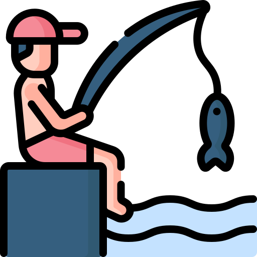

Hobi saya
Kadang main game seru di kamar, besoknya nyantai mancing sambil nunggu umpan disambar, weekend udah sibuk ngegolin bola di lapangan futsal, dan di sela-sela itu sempetin juga ngegas motor keliling kota atau sekadar ngadem di pinggir jalan. Buat saya, hobi itu cara paling asik buat ngisi waktu, ngilangin stres, dan tetap waras di tengah padatnya hidup.

Gaming

Futsal

Mancing

Motor - Motoran